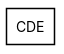
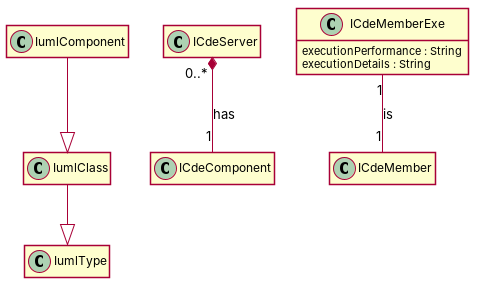

← all cases
D2/CDE — model qwen, condition B, run 1
1. Requirements (input)
R1: The class IUmlType tries to represent the different types of uml elements.
R2: Class ICdeComponentSpec represents a subtype of IUmlType
R3: Class IUmlClass is a subclass of IUmlType
R4: IUmlComponent is a subtype of IUmlClass
R5: A class named ICdeServer
R6: A class named ICdeComponent
R7: A class named IUmlMember
R8: A class named ICdeMember in the CDE package.
R9: The ICdeMemberExe of a CDE has two attributes: a String named executionPerformance and another String called executionDetails.
R10: The overall model seems to describe the structure of UML types (classes or components), and the fragment represents the fact that each type has a bunch of members (attributes/functions)
R11: In this model, class ICdeServer implements zero or more ICdeComponent
2. Result 1 → Result 2 (ambiguity removal)
Red, struck-through: removed by ambiguity removal; green: added.
| classes (10 → 10) |
|---|
| IcdeComponent |
| IcdeMember |
| IcdeServer |
| IumlComponent |
| IumlMember |
| IumlType |
| Iumlclass |
| Member |
| Subclass |
| Subtype |
| attributes (1 → 1) |
|---|
| Member.bunch |
| relations (5 → 5) |
|---|
| generalization: ClassIumlClass -> Subclass |
| generalization: IumlComponent -> Iumlclass |
| has: IumlType -> Subclass |
| has: IumlType -> Subtype |
| has: Iumlclass -> Subtype |
3. Ambiguity tags
| id | req | type | cue | status | readings / explanation |
|---|
| A1 | R10 | coordination | and+or | resolved | The model describes UML types and their members.; The fragment represents the fact that each type has members.
The sentence suggests both a description of UML types and their members, which could be interpreted in two ways. |
4. Diagrams generated from the shared model
usecase diagram
class diagram
5. Code skeleton (Python; Java in code/java/)
"""Code skeleton generated from the shared model of D2/CDE.
Every class and method records the requirement(s) it traces to."""
from __future__ import annotations
import dataclasses as _dc
import enum as _enum
import typing as _t
@_dc.dataclass
class IumlType:
"""Source: R1"""
pass
@_dc.dataclass
class IumlClass(IumlType):
"""Source: R3"""
pass
@_dc.dataclass
class IumlComponent(IumlClass):
"""Source: R4"""
pass
@_dc.dataclass
class ICdeServer:
"""Source: R5"""
iCdeComponent: _t.Optional["ICdeComponent"] = None
@_dc.dataclass
class ICdeComponent:
"""Source: R6"""
pass
@_dc.dataclass
class ICdeMember:
"""Source: R8"""
pass
@_dc.dataclass
class ICdeMemberExe:
"""Source: -"""
executionPerformance: _t.Optional[str] = None
executionDetails: _t.Optional[str] = None
iCdeMember: _t.Optional["ICdeMember"] = None
6. Validation, checks and traceability
| python_compiles | True |
|---|
| java_compiles | True |
|---|
| attribute_mismatches | 0 |
|---|
| method_mismatches | 0 |
|---|
| use_cases | 0 |
|---|
| use_cases_without_actor | 0 |
|---|
| use_cases_without_method | 0 |
|---|
| actors_without_use_case | 0 |
|---|
| relations_to_unknown_class | 0 |
|---|
| inconsistencies | 0 |
|---|
| inconsistency_rate | 0.0 |
|---|
| requirement_coverage | 0.6364 |
|---|
| validator fixes | |
|---|
| assumptions for open ambiguities | [] |
|---|
7. Scores against the reference
| element | P | R | F1 | TP/FP/FN |
|---|
| classes | 1.0 | 0.778 | 0.875 | 7/0/2 |
| attributes | 1.0 | 0.667 | 0.8 | 2/0/1 |
| relations | 0.75 | 0.375 | 0.5 | 3/1/5 |
| relations_strict | 0.25 | 0.125 | 0.167 | 1/3/7 |